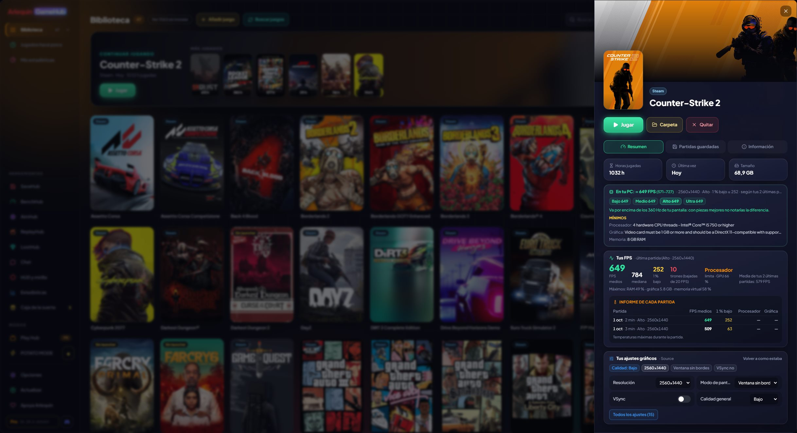

A página de cada jogo
Tudo sobre um jogo em um painel: como ele roda no seu PC, seu FPS, suas configurações e seus saves.
Clicar em um jogo abre a página dele, em três abas: Visão geral (suas horas, a última vez que jogou, quanto espaço ocupa, os requisitos, seu FPS e suas configurações gráficas), Jogos salvos e Info (suas conquistas, a descrição, a loja, o estúdio, a data de lançamento, onde está instalado e onde salva).
Roda no meu PC? O GameHub conhece seu processador, sua placa de vídeo e sua memória, e compara com os requisitos mínimos e recomendados de cada jogo na loja da Steam. Você verá um semáforo: verde se roda com folga, amarelo se atende ao mínimo e vermelho se não alcança. Na biblioteca, dá para filtrar e ver só os jogos que rodam com folga, os que rodam ou os que não rodam.
E também quantos FPS você vai ter, com uma faixa (“≈ 75 FPS (65-85)”) e em cada qualidade: Baixa, Média, Alta e Ultra. Se você já jogou, primeiro vem seu FPS real (só os da sua GPU e CPU atuais); se não, é calculado com as sessões da comunidade (se você compartilha as suas ou tem ArlequinPro) ou, de forma aproximada, com os requisitos da Steam.
O que te limita e o que vale a pena trocar? O GameHub calcula separadamente o que sua placa de vídeo daria e o que seu processador aguenta, e diz claramente: “A GPU é o limite: um processador melhor quase não aumentaria seu FPS”, ou o contrário, ou que estão equilibrados e seria preciso trocar os dois.
Também tem os jogos salvos agrupados (saves, configurações…), seus backups e botões para abrir a pasta ou instalar.
Como usar
- Clique em qualquer jogo da biblioteca e troque de aba no alto.
- O filtro “No meu PC” na barra no alto da biblioteca.

Vamos testar?
⬇ Download direto 🛍️ Baixar na Microsoft StoreWindows 10 e 11 (64 bits) · Grátis · Atualiza sozinho